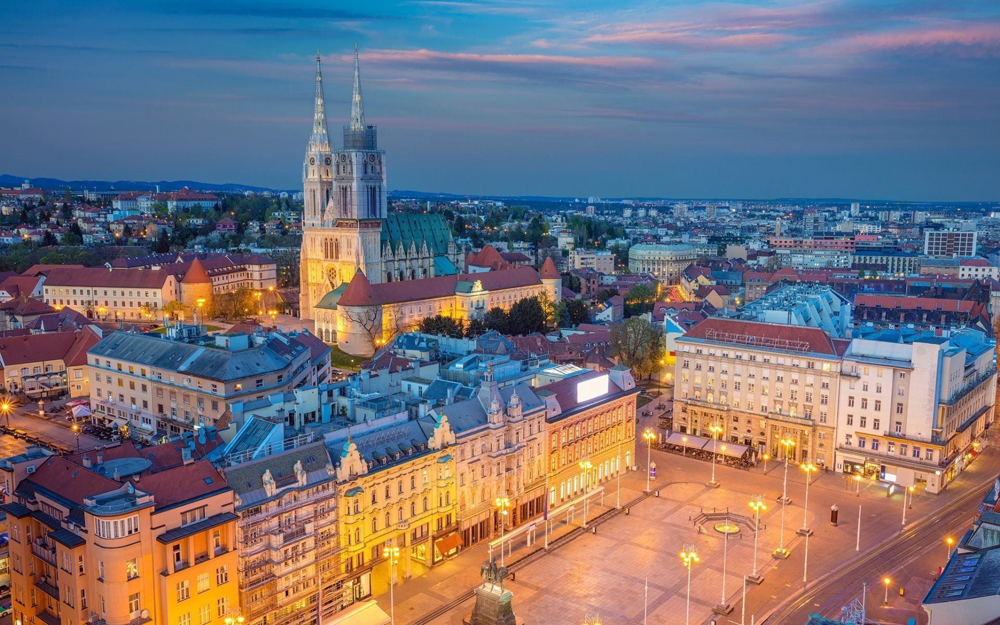
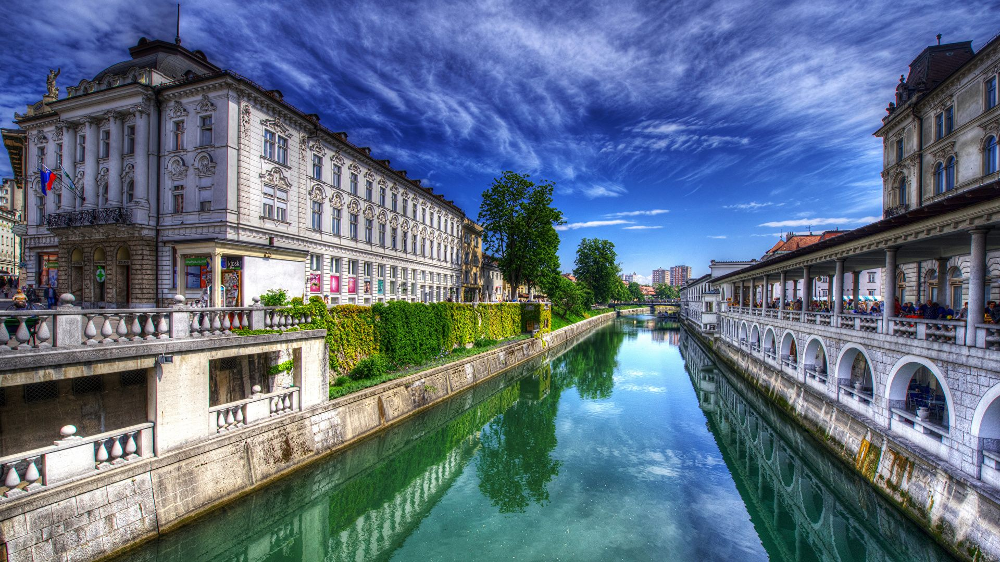
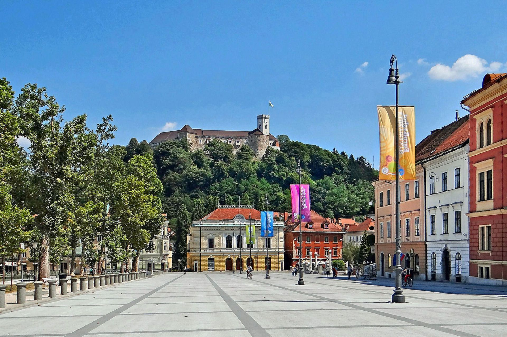
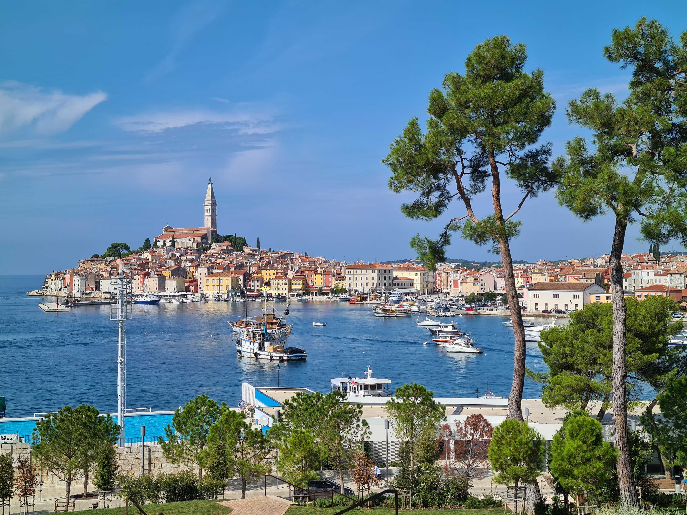
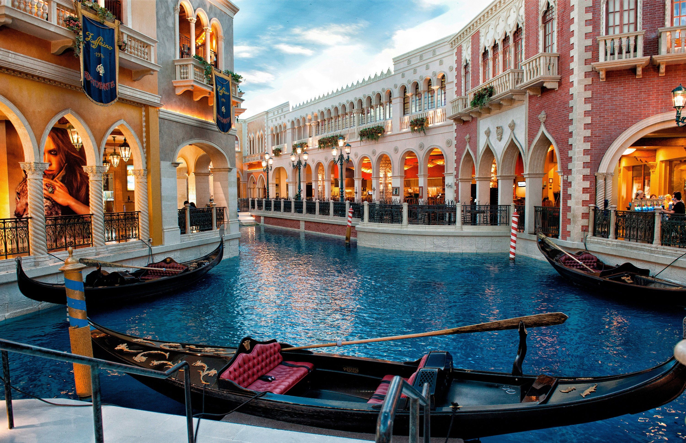
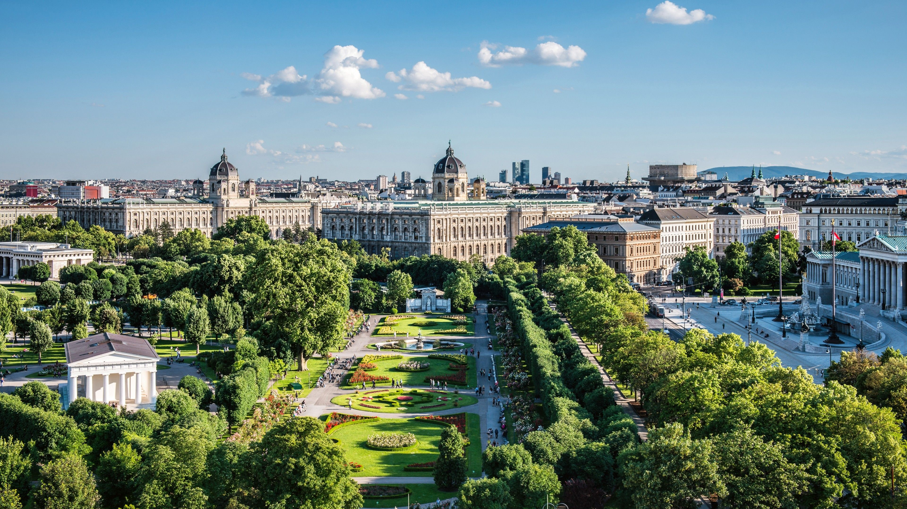
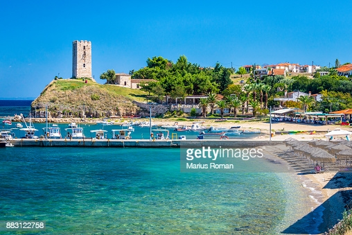

Čime se bavimo
Carvoltserbia Transfer osnovan je sa idejom da Vama,našim putnicima, pružimo udobnu i prijatnu vožnju ka mnogim većim evropskim gradovima i željenim destinacijama,po principu od vrata do vrata.Dolazimo po Vas na dogovorenu adresu i ostavljamo Vas na traženoj adresi.
Takođe radimo trasfer putnika od aerodroma Nikola Tesla do željenih destinacija u Beogradu,Novom Sadu i eventualno po dogovoru i do drugih destinacija u Srbiji.
Prevoz vršimo kombijima novije generacije,kao i automobilima sa vrhunskim komforom kako u putničkom tako i u prtljažnom delu. Termini polazaka su u ranim jutarnji časovima.
Vožnje obavljaju iskusni vozači koji vam garantuju sigurnost,udobnost i prijatnu vožnju do vašeg odredišta.
Cene kombi prevoza
Cene kombi prevoza putnika po destinacijama možete pogledati u tabeli ispod.
| Destinacija | Jedan smer (EUR) | Oba smera (EUR) |
| Beograd - Zagreb - Beograd | 40 EUR | 80 EUR |
| Beograd - Ljubljana - Beograd | 45 EUR | 90 EUR |
| Beograd – Solun Aerodorm - Beograd | 50 EUR | 90 EUR |
| Beograd - Grčka (1. prst, 2. prst) - Beograd | 50 EUR | 80 EUR |
| Beograd - Maribor-Ptuj | 50 EUR | 100 EUR |
| Beograd - Kopar, Izola, Piran, Portorož | 60 EUR | 120 EUR |
| Beograd - Bled | 60 EUR | 120 EUR |
| Beograd - Trst | 65 EUR | 130 EUR |
| Beograd - Halkidiki | 55 EUR | 100 EUR |
| Beograd - Rijeka, Opatija | 60 EUR | 120 EUR |
| Beograd - Pula | 70 EUR | 140 EUR |
| Beograd - Novigrad, Umag | 70 EUR | 140 EUR |
| Beograd – Grac | 65 EUR | 130 EUR |
U slučaju potrebe za specifičnom uslugom kombi prevoza putnika na postojećim destinacijama, kao i u slučaju potrebe za kombi prevozom putnika do drugih gradova u Srbiji i Evropi, molimo kontaktirajte nas na navedene telephone ili putem E-maila.
Destinacije
BEOGRAD-ZAGREB (HRVATSKA)
Vršimo svakodnevno prevoz putnika i paketa od Beograda (preko Hrvatske granice) do Zagreba i nazad po sistemu od vrata do vrata.
Ne postoji uslovljavanje sa minimalnim brojem putnika. Satnica nije fiksna, već se u dogovoru sa putnicima iz dana u dan iznova formira.
BEOGRAD-LJUBLJANA (SLOVENIJA)
Kombi prevoz putnika do Ljubljane i aerodroma u Ljubljani (preko Hrvatske granice),po sistemu od vrata do vrata. Prevoz se obavlja popotrebi za pojedince kao i za grupe klijenata na zahtev.
Takođe, postoji mogućnost stajanja i u drugim gradovima i skijaškim centrima i svim banjama Slovenije.
BEOGRAD-SLOVENAČKO PRIMORJE (Kopar, Izola, Piran, Portorož)
Avaco Transfer u svojoj ponudi ima prevoz putnika od Beograda do slovenačkog primorja,po principu od vrata do vrata.
Za više informacija kontaktirajte našu kancelariju.
BEOGRAD-ISTRA
Vršimo svakodnevno prevoz putnika od Beograda (preko Hrvatske granice) do gradova na Istri: Rijeka,Pula, Rovinj, Umag, Novigrad i Poreč.
Skupljanje putnika se vrši sa prethodno dogovorenih adresa po sistemu od vrata do vrata.
Kombi prevoz putnika do Rijeke, Pule, Opatije, Rovinja, Umaga, Novigrada i Poreča nije linijski već se obavlja po potrebi za pojednince ili grupe klijenata na zahtev,ne postoje stajališta za skupljanje putnika.
Ne postoji uslovljavanje sa minimalnim brojem putnika. Satnica nije fiksna, već se u dogovoru sa putnicima iz dana u dan iznova formira.
BEOGRAD-TRST (ITALIJA)
Svakodnevno vršimo kombi prevoz putnika i paketa na relaciji Beograd-Trst-Beograd,preko Zagreba,Istre i Kopra.
Skupljanje putnika se vrši sa prethodno dogovorenih adresa po sistemu od vrata do vrata.
Ne postoji uslovljavanje sa minimalnim brojem putnika. Satnica nije fiksna, već se u dogovoru sa putnicima iz dana u dan iznova formira.
BEOGRAD-ZAGREB-MARIBOR-GRAC (AUSTRIJA)
Kompletna ruta kombi prevoza Beograd – Grac prolazi kroz gradove Zagreb i Maribor sa mogućnošću stajanja u Terme Čatežu,Olimija,Rimske terme,Terme Laško i ostale veće terme gradovima Slovenije. Za više informacija o gradovima u kojima stajemo pozovite našu kancelariju.
Ne postoji uslovljavanje sa minimalnim brojem putnika. Satnica nije fiksna, već se u dogovoru sa putnicima iz dana u dan iznova formira.
BEOGRAD-HALKIDIKI (GRČKA)
U letnjoj sezoni vršimo kombi prevoz putnika iz Beograda do Halkidikija po principu od vrata do vrata.Polasci su dva puta dnevno,za više informacija molimo vas da nas kontaktirate.